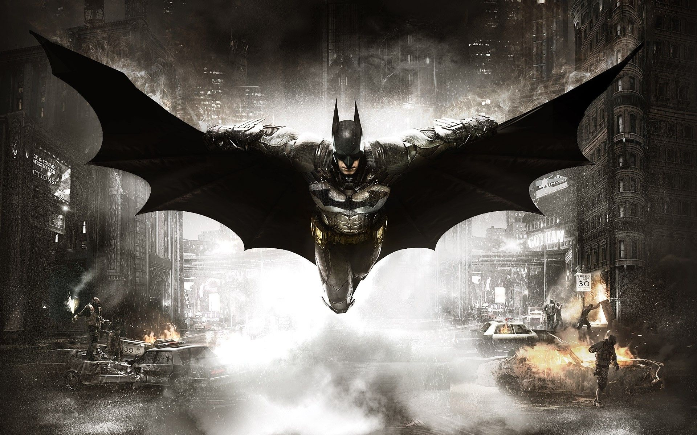
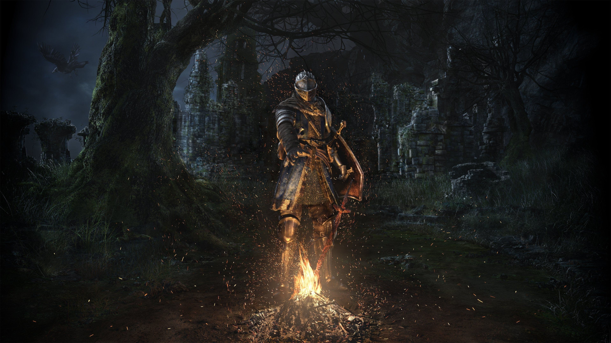
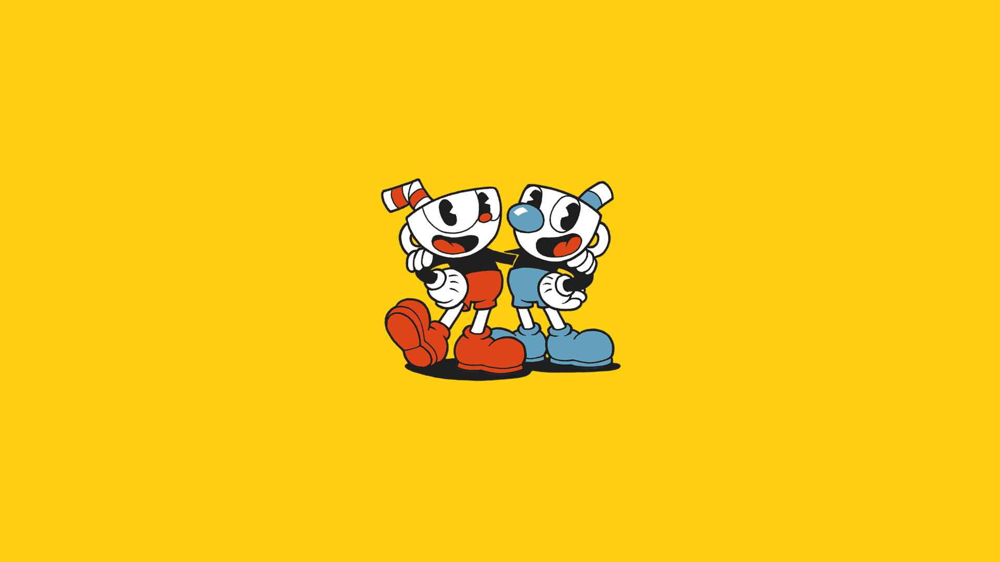
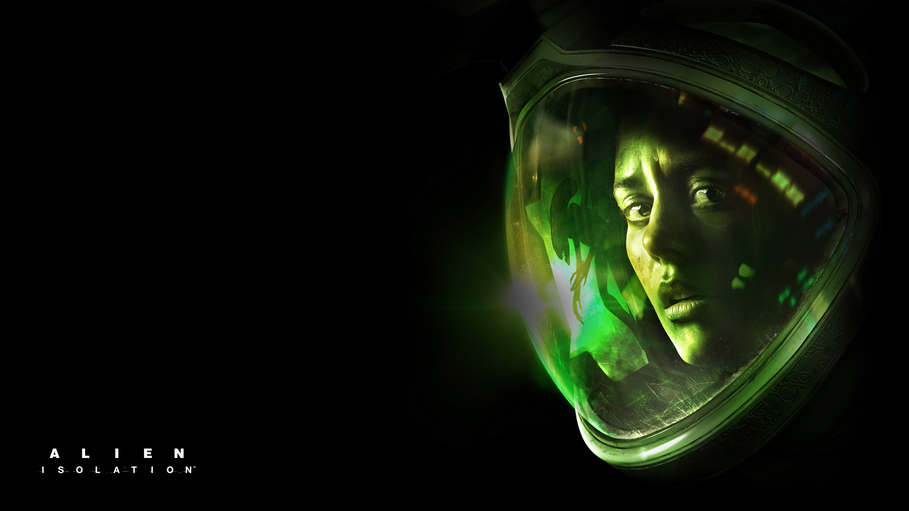

Top 6 jogos
Todos nós temos algum jogo favorito, aquele que faz você entrar em crise existencial depois de zerar,
ou, querer quebrar o controle depois de morrer 500 vezes para o mesmo boss, como no Dark Souls. Por
isso, reunimos uma lista dos nossos 6 jogos favoritos para apresentar para vocês.
Batman Arkham Knight

Batman Arkham Knight foi lançado em 2015 com a proposta de alavancar ainda mais seu mapa aberto e a
exploração de missões secundárias em comparação com seu antecessor, Batman Arkham City. O jogo também
conta com uma trama cheia de vilões do morcego e com a companhia de seu Batmovel.
Empresa Desenvolvedora: Rocksteady
Tamanho: 55GB
Dark Souls

Dark Souls foi lançado em 2011 pela FromSoftware sendo um dos jogos mais revolucionários no quesito de
RPG, criando até uma nova categoria chamada Souls Like para jogos que são baseados no
mesmo estilo que Dark Souls. O jogo é conhecido pela sua alta dificuldade e batalhas com Bosses
épicos.
Em 2018 o jogo recebeu uma versão remasterizada, trazendo melhorias gráficas, sonoras e utilitárias.
O jogo também conta com outras 2 continuações e outros jogos Souls Like que lembram bastante da
obra,
sendo um deles o atual lançamento Elden Ring.
Empresa Desenvolvedora: FromSoftware
Tamanho: 8GB
Resident Evil 2 Remake

Resident Evil 2 foi um clássico originalmente lançado para Playstation em 1998. O game trouxe
ainda mais
terror para a franquia e novos inimigos que fazem história até hoje, como o Licker e o famoso Mister X.
O jogo recebeu
um Remake em 2019 trazendo uma baita repaginada no visual, mecânicas, utilidades, jogabilidade,
conteúdos adicionais,
mudanças na trama e muito mais.
Empresa Desenvolvedora: Capcom
Tamanho: 26GB
Cuphead

Cup Head é um jogo de aventura no estilo plataforma e "Run and Gun" com gráficos inspirados em
desenhos
animados no estilo "Rubber Hose", populares na decada de 30.
O jogo conta a história de 2 personagens; Cuphead e Mugan, em uma trama onde os dois precisam enfrentar
diversos bosses e desafios
para não serem consumidos pelo diabo.
O jogo teve uma ótima recepção da comunidade gamer quando foi lançado em 2017, tanto que recentemente foi
lançado Cuphead - A Série
recentemente na Netflix.
Empresa Desenvolvedora: Studio MDHR
Tamanho: 4GB
Alien: Isolation

Alien Isolation é um jogo de horror e sobrevivência com tema espacial / "Sci-fi", onde você
precisa lidar com robos que te caçam
a todo momento, e o mais preocupante, o próprio Alien
O jogo foi lançado em 2014 mas até hoje é bastante aclamado e elogiado devido à inteligência artificial
do Alien. O mesmo é capaz de se adaptar
à sua forma de jogo, prevenir as armadilhas do jogador, te localizar rapidamente através de sons e
movimentação.
O jogo te envolve em uma imersão muito
grande, possibilitando a viagem rápida entre estações, objetivos secundários, colecionáveis e
ambientação tenebrosa.
Empresa Desenvolvedora: Studio MDHR
Tamanho: 35GB
The Last of Us Part II

The Last of Us 2 foi um dos maiores lançamentos da geração PS4, trazendo continuidade à trama do primeiro
jogo e ainda mais imersão para a história.
O jogo conta com uma melhoria absurda em gráficos e jogabilidade, trazendo uma repaginada nos gráficos
utilizando o método de foto-realismo,
jogabilidade nova e novo sistema de luta e muito mais.
O jogo recebeu o prêmio de melhor jogo do ano de 2020 e desde então, seguimos na ansiedade para saber se
haverá uma continuação.
Empresa Desenvolvedora: Naughty Dog
Tamanho: 100GB